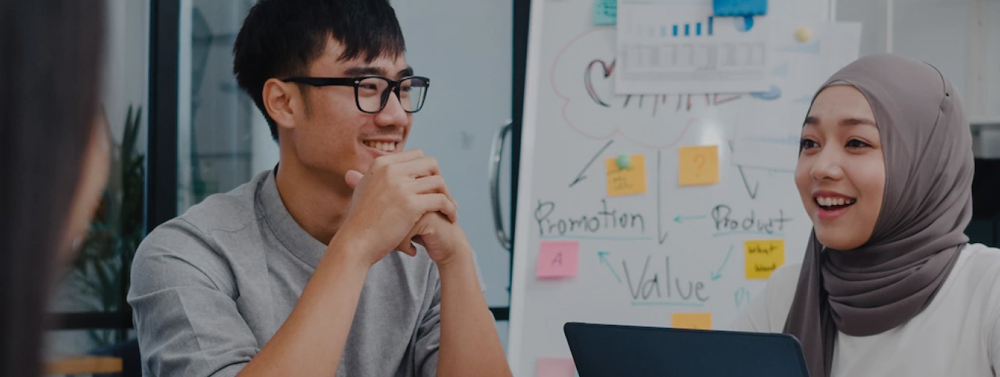

Back HR Event Page

Strategi Persiapan untuk Memulai Pekerjaan Baru
 Auditorium Universitas Negeri
Indonesia
Auditorium Universitas Negeri
Indonesia-
 Wed, October 19, 2022,
2:00 - 4:00 p.m. WIB
Wed, October 19, 2022,
2:00 - 4:00 p.m. WIB
Tentang
Bekerja sebagai first jobber dapat terasa menyenangkan namun menantang di waktu yang
sama. Dalam memulai pekerjaan baru, kamu harus memiliki persiapan yang baik untuk menciptakan kesan
yang baik. Acara ini akan mendiskusikan tips-tips esensial dari HR berpengalaman. Melalui kegiatan
ini, kami akan menuntun kamu pada kesuksesan dalam pekerjaan barumu. Daftar sekarang dan hemat
hingga 50% dengan Cinépolis Membership!
Alasan mengapa harus bergabung?
1. Ketahui lebih mengenai rahasia-rahasia untuk menjadi sukses dalam pekerjaan barumu
2. Bangun hubungan, baik itu dengan orang baru maupun dengan HR-HR berpengalaman
3. Diskusi daging secara dua arah bersama dengan HR-HR berpengalaman, bukan hanya satu arah
4. Biaya registrasi yang terjangkau jika kamu adalah member Cinépolis